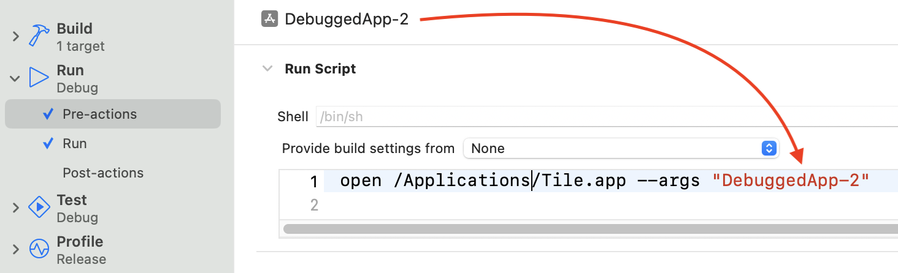

The latest beta version is fully compatible with the mac app sandbox and, therefore, allows for debugging only apps running in the Xcode Simulator.
Get the TestFlight build here: https://testflight.apple.com/join/Vf5t0mIo
Note: In the Sandboxed version, as part of your onboarding, you need to select your /Applications/Xcode.app installation to give dataTile access to the Simulator logs.
Quick start:
Integrate with Xcode:
1. Open your Xcode project. Click Project/Scheme/Edit Scheme...
2. Click In Run/Pre-actions/+ to add new pre-run script.
3. In the text field enter open /Applications/Tile.app --args "Name of your app".

4. Run the project like usual. Check out the Help/Sample App menu for a sample project.